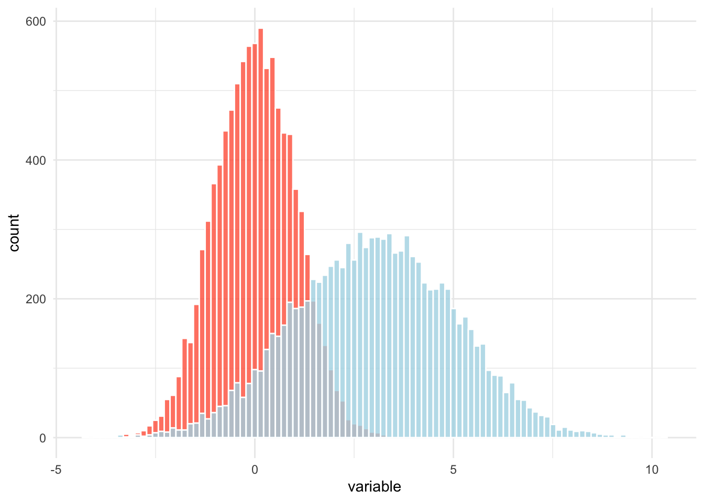
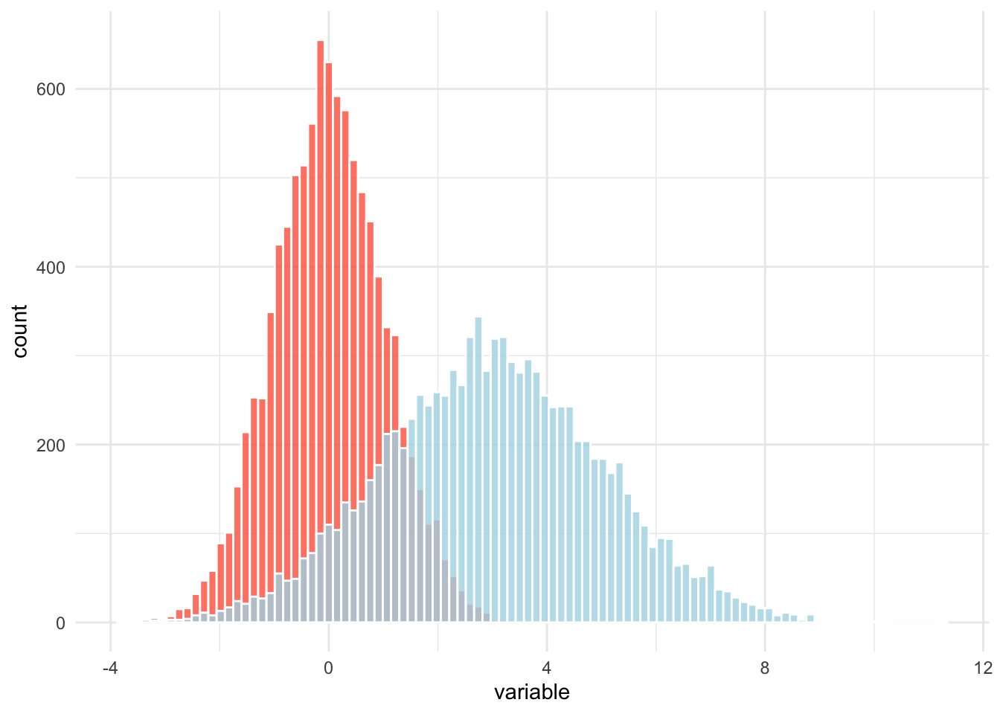
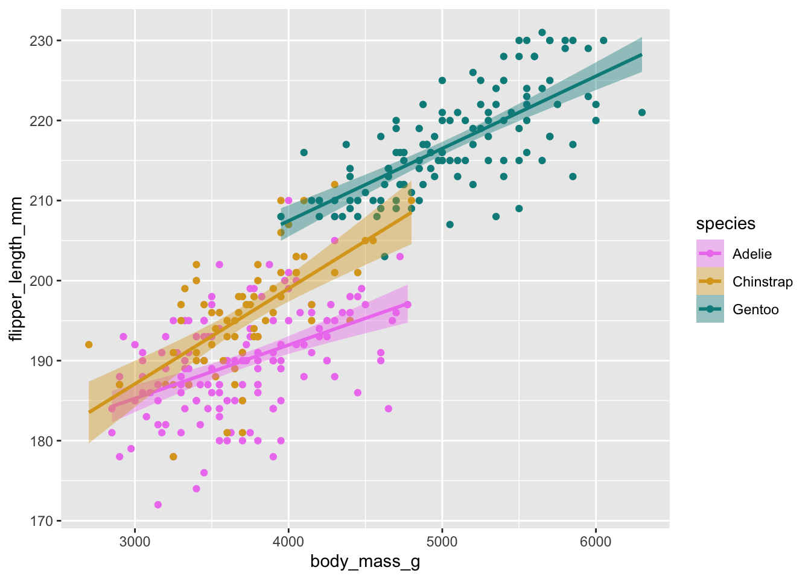

b = c(TRUE, FALSE, NA, FALSE, TRUE, TRUE)
mean(b)
## [1] NAThis post describes a common tool in functional programming known as curried functions (a.k.a. partial functions).
We show how to use them with examples in the R plotting library ggplot2, which presents many currying opportunities.
In short,
A curried function is a function with some of its arguments fixed. A curried function is also called a “partial” function, because its arguments have been partially pre-supplied. The name comes from Haskell Curry, who was a mathematician and not a food, although I love to eat curries too.
Currying a function with arguments isn’t the same as calling a function with those arguments. Instead it creates a new function that can be called later.
Here is a silly example in R. You have some logical vector b. What is its mean?
Well, b is missing some data, so the mean is undefined. You can get around this by passing an extra argument to skip over any NA elements.
mean(b, na.rm = TRUE)
## [1] 0.6And that works okay, but it’s a function of two arguments. We could imagine a function that achieves the same result with just one argument. Let’s create this function with currying.
# purrr has a partial() function
unsafe_mean = purrr::partial(mean, na.rm = TRUE)This code says, “create a new function that is like mean but with the na.rm argument fixed to TRUE”. The value that we assign to unsafe_mean is a new function. We don’t have to call it until we need it.
unsafe_mean(b)
## [1] 0.6The curried function is morally the same thing as defining this new function “the long way”,
unsafe_mean = function(x) mean(x, na.rm = TRUE)which has a bit more boilerplate involved.
Writing our own partial
We can write out own currying function. It is a higher-order function that eats a function and returns a new function. Let’s take a look.
partial = function(f, ...) {
fixed = list(...)
g = function(...) {
all_args = c(fixed, list(...))
do.call(f, all_args)
}
return(g)
}partialtakes a functionfand some unspecified arguments.... These are the arguments that we will fix. We store them in a list calledfixed.- We then return a new function, which I name
gjust to make it easier to keep track of.gis our curried function, it is likefbut it knows the arguments we have already provided.gcombines thefixedarguments with any new arguments provided when it is called (the second set of dots..., which are different from the first set) and usesdo.callto callfon those arguments.
There are a couple extra things to note. For the outer set of fixed arguments, we could have captured them unevaluated, and delay their evaluation until the g call. This would most accurately reflect what we want our pre-supplied arguments to mean when we call the curried function later, and it is what Konrad Rudolph does in his currying function. It is a bit beyond the scope our needs right now though.
Secondly, take a second to appreciate the use of do.call to evaluate our function with all of its arguments. If you aren’t familiar with do.call, it is a higher order function that evaluates a function (the first argument) with the arguments provided through a list (the second argument). Imagine instead of writing mean(x, na.rm = TRUE), you write do.call(mean, list(x = x, na.rm = TRUE)). Passing a container of arguments may feel odd at first, but it actually very useful for functional programming because we can rewrite any multi-argument function as a function of only one argument: a list. This gives us a sublanguage where we can imagine that every function takes only one object as its argument and returns only one object as its value…it’s just that some objects are cheekily more complex than others. You may have seen something similar in Python, but instead of a higher order function, you have tuple and dictionary unpacking. So you can write mean(*(x, TRUE)) or mean(**{'x': x, 'na.rm': TRUE}) and get the same effect. From a functional programming point of view, there isn’t much difference between a tuple and an unnamed list (each is essentially an ordered set of values) or between a dict and a named list (each is a set of named values, at which point who cares about the ordering [although you can maybe think of the names as isomorphic to an ordering {but we shouldn’t talk about isomorphism right now}]). We may have to write a blog post with more creative uses of do.call.
Examples with ggplot
Aesthetic regularities
Sometimes you want to re-use some aesthetic attributes of a plot across several plot components or across several, independent plots. These features may be reusable yet not be worthy to be considered “default” attributes, which you could otherwise set with the ggplot2::update_geom_defaults function. This middle area is a good place for partial functions.
Here is an example where I have two variables in a dataset, and I want to plot histograms for each variable side by side.1 Without partial functions, I might do this the “long way” with multiple calls to geom_histogram.
library(tibble)
library(ggplot2)
# first, some data...
d = tibble(
z = rnorm(10000, mean = 0, sd = 1),
e = 2 * z + 3
)
ggplot(d) +
geom_histogram(aes(x = z), bins = 100, color = "white", alpha = 0.8, fill = "tomato") +
geom_histogram(aes(x = e), bins = 100, color = "white", alpha = 0.8, fill = "lightblue") +
labs(x = "variable") +
theme_minimal()
This works, but I specified some redundant information in multiple calls to geom_histogram. This is annoying and potentially error-prone, and if I want to change some of these features, I have to change the arguments to multiple functions.
Here is the same plot with a partial function approach:
# create a new histogram function w/ arguments fixed
geom_hist_rv = partial(geom_histogram, bins = 100, color = 'white', alpha = 0.8)
# apply our function
ggplot(d) +
geom_hist_rv(aes(x = z), fill = "tomato") +
geom_hist_rv(aes(x = e), fill = "lightblue") +
labs(x = "variable") +
theme_minimal()
This approach eliminated all redundant information from the specification of the histograms. Call that a win.
Scale functions
When you are working for a while in one project, you are often mapping the same features in your data to the same colors, fills, point shapes, and so on. This leads you to write repeated calls of scale_color_manual(values = c(...)). In my years as a political scientist, I found myself doing this a lot with the same two colors to represent the U.S. Democratic and Republican political parties, for instance. It grows tedious.
But you can create your own scale_ functions that encode the “visual semantics” of your project data by currying the built-in scale_ functions. You can write these new functions one time and save yourself the effort elsewhere in your project.
For instance, if I always want certain species in the palmerpenguins data to map to the same colors, I can write some functions…
# a vector of key-value pairs, species to color
peng_colors = c("Adelie" = "violet", "Chinstrap" = "goldenrod", "Gentoo" = "darkcyan")
# invoke the pairs in curried arguments
scale_color_species = partial(scale_color_manual, values = peng_colors)
scale_fill_species = partial(scale_fill_manual, values = peng_colors)And now I can employ those visual standards wherever I want.
library(palmerpenguins)
ggplot(penguins) +
aes(x = body_mass_g, y = flipper_length_mm, color = species, fill = species) +
geom_point() +
geom_smooth(method = "lm") +
scale_color_species() +
scale_fill_species()
## `geom_smooth()` using formula = 'y ~ x'
## Warning: Removed 2 rows containing non-finite values (`stat_smooth()`).
## Warning: Removed 2 rows containing missing values (`geom_point()`).
And if I ever wanted to change the way I represent species as colors, I change the function in one place only. Nice.
Why use partial functions?
By fixing a function’s arguments, it may seem like we are restricting a function’s behavior. And restricting a functions behavior may not seem like a good thing to do when I could have a more general, more flexible function. After all, the point of a function having arguments is to enhance its flexibility, right?
There are a few perfectly good reasons.
Convenience. If you are writing the same function many places, but sometimes you invoke one set of arguments and sometimes you invoke others (calls to
ggplot2::themecome to mind), it really is no big deal to have another function or two lying around that encapsulate some of those argument sets. This can be especially useful if the argument provision is repetitive and error-prone, as it can be with plotting. It can also be valuable when it’s easier to recall the function name instead of detailed argument data (again,ggplot2::theme). Our examples above how we can lock these arguments into their own functions, so we no longer have to worry about introducing bugs or inconsistencies in our code by misspecifying their “free” parameters.Composition. This is crucial. Functional programming makes heavy use of function composition (creating new functions from existing functions). For instance, we can rewrite
g(f(x))ash(x), wherehis just the function composition ofgandf. Composition works when the output of the first functionfmatches the input type of the next functiong, and this works great in R when yourgtakes one argument. But what if yourgneeds multiple arguments?g(f(x), other_args = ...)might be more irritating to read in whatever context you are working in. Another way to handle this is by creating a partial function in place ofg, use that function to precomposeh, and we’ll be on our way.Abstraction. If a function takes more than one argument, is any single argument the “primary” argument? In some contexts this may informally be meaningful, but not in any formal sense. Consider our
unsafe_meanexample above. Themeanfunction takes two arguments (it can actually take more, but let’s set them aside). We created anunsafe_meanfunction that fixesna.rm. But just as easily we could fixed the data argumentx,b_mean = partial(mean, x = b)and call this new function by passing
na.rm = TRUE.b_mean(na.rm = TRUE) ## [1] 0.6…or by passing nothing at all! Which would use the base function’s defaults.
b_mean() ## [1] NAThis is obviously a weird example, but I am trying to get you to embrace that weird.
You can imagine other examples, like
lmorglm. Arelmandglmfunctions of regression formulae, or are they functions of datasets? We could fix the formula and let the dataset vary…apply_reg = partial(lm, formula = y ~ x + z + w)Or we could fix the dataset and let the formula vary:
reg_on_penguins = partial(lm, data = penguins)Both of these partial functions are valid. Mathematically it makes no difference.
These abstractions and compositions let us be creative even while we are supposedly “restricting” the behavior of functions. The creativity comes not from “how many different argument configurations can I supply to this function” but rather “what meta-structures can I build by building functional routines that support certain patterns”. This brings us to some higher points about functions and functional programming in R.
Functions are objects
In R we like to say “everything is an object”. We can break this down into a couple important properties. First, we can ask about the properties of functions as if they were any other data.
attributes(unsafe_mean)
## $srcref
## function(x) mean(x, na.rm = TRUE)We can pass functions as arguments to other functions. You may have seen this with apply functions or purrr::map.
lapply(mtcars, unsafe_mean) |> head()
## $mpg
## [1] 20.09062
##
## $cyl
## [1] 6.1875
##
## $disp
## [1] 230.7219
##
## $hp
## [1] 146.6875
##
## $drat
## [1] 3.596563
##
## $wt
## [1] 3.21725And we can return functions as values from other functions.
# take in a function f and return a "lifted" function that applies f to a list
fmap = function(f) {
function(lst) lapply(lst, f)
}
map_unsafe_mean = fmap(unsafe_mean)
map_unsafe_mean(mtcars) |> head()
## $mpg
## [1] 20.09062
##
## $cyl
## [1] 6.1875
##
## $disp
## [1] 230.7219
##
## $hp
## [1] 146.6875
##
## $drat
## [1] 3.596563
##
## $wt
## [1] 3.21725In this example, fmap is a higher-order function (a function of a function). The value fmap(unsafe_mean) is itself a function. It waits for the user to pass it a list.
Footnotes
Suppose that I want to do this without reshaping/pivoting the data. If I reshape the data longer, I could create just one
geom_histogramand mapfillto the newnamevariable. But I actually don’t think reshaping the data is always a good idea. Reshaping can be unnecessarily expensive, and it is an instance where you are letting your plotting framework “flow backward” into your data organization. I consider that that backward flow a code smell in many cases, and I plan to discuss it in a future post.↩︎